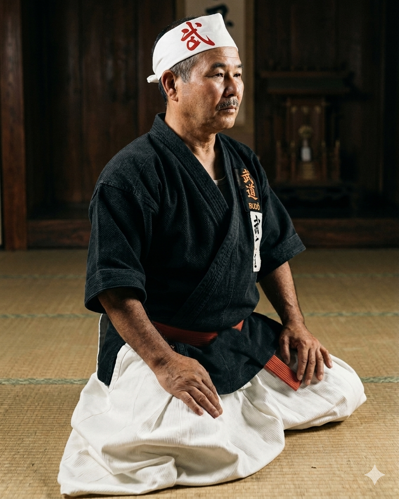

Historia da Shinshukan

A Shinshukan nao e apenas uma escola de artes marciais; e um pilar da tradicao okinawana no
Brasil, um legado construido sobre os alicerces da disciplina, respeito e excelencia. Fundada
pelo visionario Grao-Mestre Yoshihide Shinzato, a Shinshukan se tornou sinonimo de Karate-Do e
Kobu-Do, sendo um dos principais responsaveis pela introducao e disseminacao do estilo
Shorin-Ryu em terras brasileiras.
As raizes em Okinawa: Yoshihide Shinzato e a essencia do Karate. A jornada da Shinshukan comeca
muito antes de sua fundacao, nas ilhas de Okinawa, Japao, berco do Karate. Yoshihide
Shinzato, nascido em 15 de marco de 1927, no distrito de Haebaru, iniciou sua paixao pelo
Karate aos 12 anos. Seus primeiros passos foram guiados pelo mestre Anbun Tokuda e, apos os
desafios da Segunda Guerra Mundial, ele aprofundou seus conhecimentos com o lendario
Grao-Mestre Choshin Chibana, fundador do estilo Shorin-Ryu. Em busca de novas oportunidades,
Shinzato imigrou para o Brasil em 1954 junto com sua familia. Estabeleceu-se inicialmente em
Sao Vicente, no litoral paulista, onde mantinha viva a chama do Karate enquanto sonhava em
compartilhar sua arte com o novo pais que o acolheu.
A fundacao da Shinshukan: nasce uma lenda. O sonho de Yoshihide Shinzato se materializou em 3
de junho de 1962, com a fundacao da Academia Santista de Karate-Do. Com o tempo, a academia
evoluiu e foi rebatizada como Associacao Okinawa Shorin-Ryu Karate-Do Brasil. A denominacao
final, Shinshukan, foi cuidadosamente escolhida e carrega o proprio nome de seu fundador:
"Shin" de Shinzato, "Shu" de Yoshihide e "Kan", que significa escola ou casa. Assim,
Shinshukan pode ser entendida como a escola de Yoshihide Shinzato, um tributo vivo ao seu
criador.
Crescimento e filosofia: kihons, katas e Kobu-Do. Sob a lideranca carismatica e rigorosa de
Shinzato, a Shinshukan floresceu e se tornou uma das mais respeitadas escolas de Karate-Do no
Brasil e no mundo. A filosofia da escola sempre enfatizou a pratica dos kihons e dos katas.
Os kihons sao as posicoes e os movimentos basicos da pratica do Karate-Do, enquanto os katas
sao sequencias de movimentos preestabelecidos que simulam combates reais. Para Shinzato, os
kihons desenvolviam a tecnica do praticante e os katas representavam a verdadeira essencia do
Karate. Alem do Karate-Do, a Shinshukan tambem incorporou o Kobu-Do em seu curriculo,
enriquecendo ainda mais o treinamento de seus alunos.
O legado de um grande mestre. O impacto de Grao-Mestre Yoshihide Shinzato na cultura e nas
artes marciais foi imenso. Em 2003, o governo japones, em reconhecimento a sua dedicacao e por
ser um verdadeiro embaixador da cultura niponica no mundo, concedeu-lhe a prestigiosa
distincao de Grande Comendador de Outono. Yoshihide Shinzato nos deixou em 13 de janeiro de
2008, mas seu legado continuou a inspirar e moldar geracoes de praticantes de artes marciais
em todo o mundo.
A continuidade do sonho: Masahiro Shinzato.
Apos o falecimento do Grao-Mestre, a lideranca da Shinshukan foi honrosamente passada para seu
filho, Masahiro Shinzato. Nascido em Okinawa em 3 de agosto de 1950, ele se dedicou ao Karate
sob a tutela de seu pai desde 1962.
Mestre Masahiro Shinzato nao apenas manteve a tradicao, mas tambem contribuiu
significativamente para o desenvolvimento do Karate no Brasil. Ele ocupou cargos de destaque,
incluindo a presidencia da Federacao Paulista de Karate, e sua maestria foi reconhecida com a
promocao ao 9o Dan em 2007.
Em 11 de abril de 2024, Mestre Masahiro Shinzato tambem nos deixou, mas seu legado de
dedicacao ao Karate-Do e a Shinshukan permanece indelevel, como inspiracao para todos.
Shinshukan hoje: tradicao e excelencia continuam.
Hoje, a Shinshukan, agora sob a lideranca do sensei Mitsuhide Shinzato, segundo filho do
Mestre Shinzato, segue firme em sua missao de promover o Karate-Do e o Kobu-Do, realizando
eventos, seminarios e campeonatos que mantem viva a chama da arte marcial.
A Shinshukan permanece como um farol na difusao do Karate-Do e do Kobu-Do, honrando as
profundas tradicoes de Okinawa enquanto se adapta e evolui para atender as necessidades
contemporaneas dos praticantes. E uma historia de paixao, dedicacao e um legado que continua a
formar nao apenas grandes artistas marciais, mas tambem cidadaos exemplares.